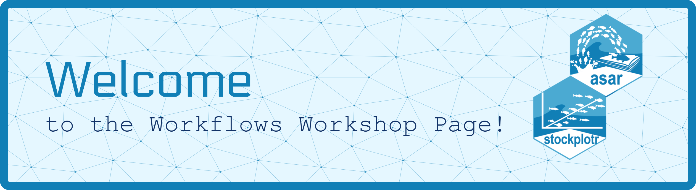

Workflows Workshop Home
Learn how to write semi-automated stock assessment reports!

This repository houses the agenda, materials, and communication for the NOAA Fisheries Stock Assessment Workflows Workshops being held starting in 2026! Please use this README to help navigate within our repository and find out our current progress and plans in real time.
Currently, we are coordinating with our NOAA Fisheries Regional Science Centers to determine the best time to work with our stock assessment scientists and conduct these trainings.
Background
The workflows of stock assessment scientists across the U.S. are highly variable and all consistently face similar issues including lack of automation, challenging data wrangling, increased requests for analyses, and more. A team with the National Stock Assessment Program at NOAA Fisheries HQ set about addressing some of these needs by identifying parts of the workflow scientists needed help in. While there were needs to improve parts of the workflow at every step, the team and a steering committee decided to first approach the lowest hanging fruit, reporting. The goal of this project was to establish a semi-automated system for generating reports in order to reduce time completing mundane and tedious tasks that, with some effort, could be automated. From there, asar and stockplotr were built along with beginning to establish a standard set of guidelines for stock assessment reports.
System Requirements
| Program | Version |
|---|---|
| R version ? | |
| Quarto v1.6+ | |
| Latex from tinytex bundle-2 |
Format
As of now, we are planning to hold a series of workshops spanning 3 days (Tuesday-Thursday) in 3 hours sessions.
Day 1: Learning the foundations of Markdown, Quarto, and the Workflow
- Markdown
- Quarto
- General overview of {asar} and {stockplotr}
Day 2: Introduction to asar
- Basics of {asar}
- Getting familiar
- Customization and adding complexities to your report
Day 3: Adding Complexity and stockplotr
- Introduction to {stockplotr}
- Integrating tables and figures into {asar} report
- Making reports accessible